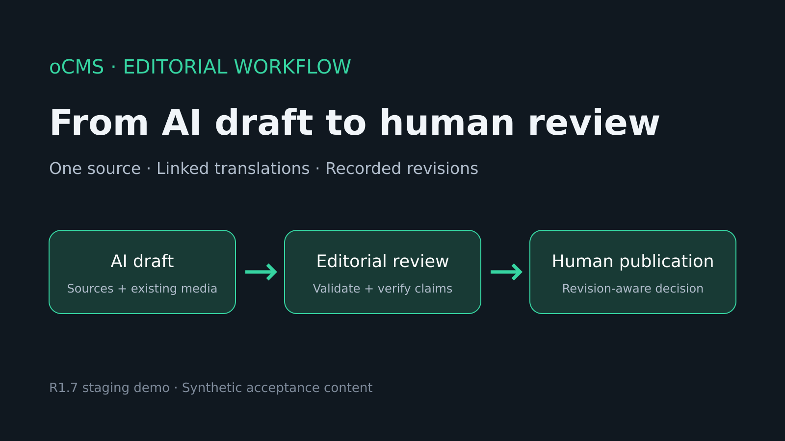

An AI assistant can write an article quickly. Getting that article into a CMS with the right references, images, translations and review history takes more work. The oCMS R1 candidate connects those steps through MCP: the assistant saves a real draft, another connected app can continue it, and an editor reviews the recorded revision before publishing.
The workflow has now been exercised on staging with Claude, ChatGPT, Claude Code and Codex. An English demo and its Russian and German translations are published there. This is a report on that candidate and its measured staging results; a production release has not been announced.
The useful starting point is a brief and selected site content. The connected app reads the draft schema, editorial guidance and authoring context before proposing an article. References identify the visible pages and revisions supplied to the model. Existing categories, tags and media can be selected for the draft instead of inventing IDs or uploading another copy of an image.
A reference records what was available to the assistant. It does not prove a claim, establish that the model used it correctly or provide sentence-level provenance. Editorial guidance can set tone and structure; the editor still has to check the result.

The draft tools save title, summary, body, SEO metadata and existing taxonomy and image assignments. A successful response returns the page ID, revision, validation issues, editor URL and a session-authenticated preview URL. Those returned values make the result inspectable in oCMS.
The draft belongs to the authenticated account. With the required permissions and AI-edit opt-in, another app connected as that same user can read the draft and continue it. In the staging demo, work started in native Claude Desktop and continued across ChatGPT and the two CLIs. The CMS revision remains the shared record.
Each mutation carries a request UUID for retries. Replaying the same accepted request returns its recorded result rather than repeating the content operation. An update also supplies its base revision. If another app or editor has changed the page, oCMS refuses the stale write with a revision conflict. The app must read the current page and reconcile its proposed edit.
A translation is a linked draft with a recorded source page, revision and content fingerprint. Changing the source text or SEO makes the translation stale. Publishing the source or changing language membership should leave freshness unchanged when the translated source fields are unchanged. An older source revision can therefore remain a valid basis.
Reviewing an existing translation is an explicit editor action. The reviewer compares the saved translation with the source snapshot, acknowledges that it preserves the meaning and selects Mark translation reviewed. The action checks both displayed revisions and the language relationship, then records a new translation revision with the reviewer and current source basis. It changes no article text and grants no publication authority.
That distinction matters: an ordinary agent edit cannot quietly clear a stale flag. If the source changes during review, the action refuses the outdated form so the reviewer can compare again.
The editorial sidebar separates three kinds of information:
A claim checkbox records an editorial acknowledgment for that revision. It does not turn the claim into a verified fact. New revisions start with fresh acknowledgment state; earlier review remains in history. Revision comparisons help the reviewer see which text and metadata actually changed.
The ordinary preview is pinned to a saved revision and requires an editor session. It keeps showing that snapshot when later edits change the current page. Preview rendering suppresses tracking, forms, external loads and private navigation. It pins content and media assignments, while referenced asset files and taxonomy names retain their documented current-value limits.
Sharing requires a separate, explicit action. A share link grants access to the selected revision until expiry or revocation. Its bearer travels in the URL fragment and is redeemed in a POST body, keeping it out of HTTP request URLs and referrers. The tested browser flows and controlled Fly proxy-error probes passed; that evidence does not establish universal log redaction. Anyone holding an active link can read its snapshot.
The draft workflow uses mcp:access and mcp:drafts. OAuth keeps the site's normal password, required MFA and consent flow. CLI bearer mode applies the site's API-key restrictions. These MCP tools cannot publish, schedule, delete or transfer a page.
Account → Connected apps shows registered connection metadata, scopes, expiry and last use. The account can revoke its own access; administrators have a separate oversight view. Revocation rejects subsequent MCP requests and invalidates associated preview links. It does not delete previously saved content or its review history.
The completed public examples are English page 27, revision 9, Russian page 43, revision 7 and German page 44, revision 6. The owner approved the content and performed the final publication confirmations. Both translations are Current. Anonymous rendering, localized alt text, canonical URLs and reciprocal language links were checked.
The final 31-second demo segment is a screenshot walkthrough of those actual published views, not continuous footage of the Publish clicks. The full multilingual client matrix, later native Desktop reconnect, CLI OAuth/bearer checks and dependency checks have separate recorded build scopes. They are not one fresh matrix on the final staging binary.
The original publication run exposed a bug in the editor. A status-only save through TinyMCE rewrote unchanged HTML and marked both translations stale. Restoring the approved English revision resolved the staging state. A later test on 6c611040 published a disposable translated draft through the ordinary editor form. The stored HTML matched byte for byte, both translations stayed Current, and the public page rendered its image description and caption.
The intended editorial result is concrete: a saved draft with inspectable history, linked translations whose freshness has a defined meaning, a preview of the reviewed revision and a human publication decision. The assistant prepares and revises the content. The editor remains responsible for its accuracy and release.